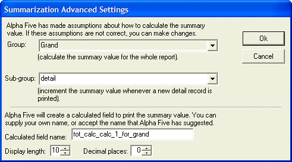

Proper Use of the GRP
Alpha Anywhere provides many aggregation functions that are used in reports to TOTAL(), AVERAGE() and summarize other numerical fields. These functions have a similar syntax, which includes an optional third argument. In most cases Alpha Anywhere can infer the correct value for this expression. In a limited number of cases, when you place a calculated field that has a constant value, you must explicitly state what the expression should be.
What Do the GRP
The GRP
The GRP
Alpha Anywhere automatically inserts the proper value
for the GRP
An Example of the Problem
A table has the following fields and values.
|
Table_ID |
Value_1 |
|
1 |
1 |
|
2 |
2 |
|
3 |
3 |
We want to create a report that totals Value_1 and a calculated field named Calc_1. The expression for Calc_1 does not reference any fields, but simply evaluates to the number 1. We place both Value_1 and Calc_1 on the detail and report footer sections. On the report footer we specify that each should be a total. The report that we get looks like this.

The total for Value_1 is correct, but the total for Calc_1 is wrong. This is because the underlying TOTAL()expression is wrong. The expression is:
|
total(Calc->Calc_1,GRP |
The wrong assumption is that the third, default argument
is GRP
|
total(Calc->Calc_1, GRP |
The solution, when you place Calc_1 on the report is to click the Advanced... button at the bottom of the screen to produce the following dialog box. In the Sub-group field, you replace the default value of "Grand" with "Detail".

See Also
Report Topics, Report Functions and Methods